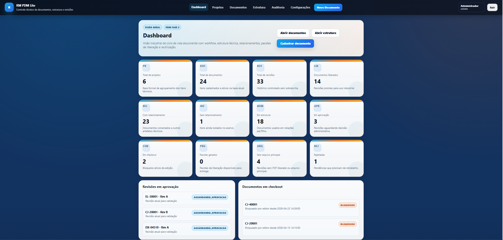
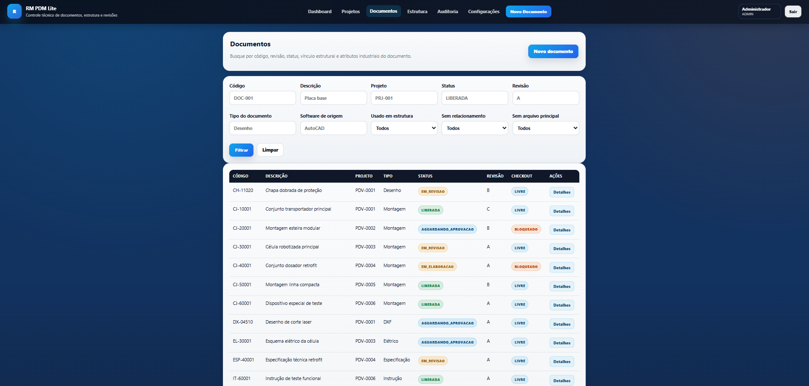
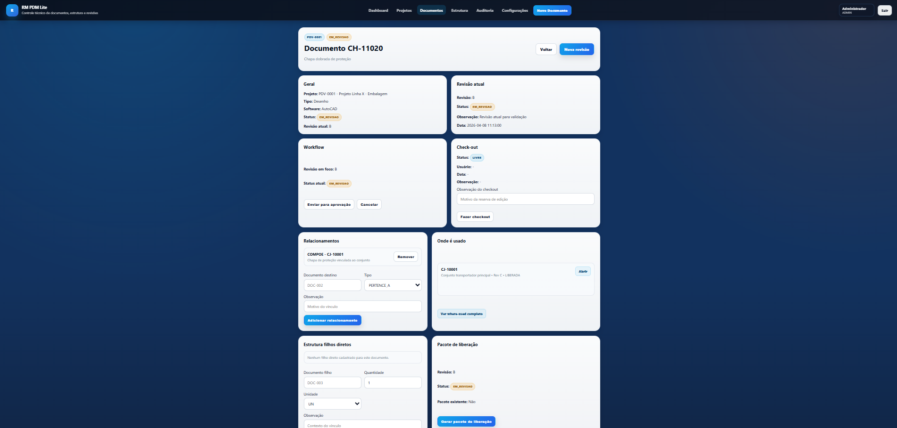
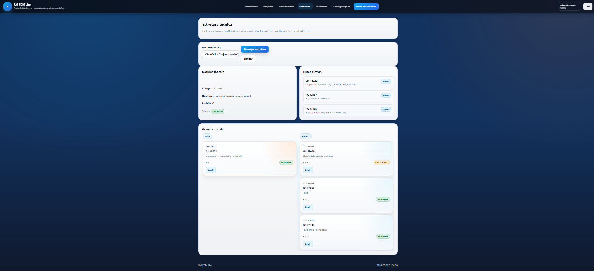

Gestão documental para engenharia industrial
RM PDM Lite
Controle técnico de documentos, revisões e liberações de engenharia.
Organize desenhos, modelos 3D, estruturas técnicas e fluxos de aprovação em uma plataforma web confiável, criada para equipes que precisam reduzir riscos operacionais e manter rastreabilidade total.
Visão executiva
Contato
Preencha seus dados e continue a conversa no WhatsApp
Ao clicar em enviar, o WhatsApp abre com uma mensagem pronta para a equipe da Rumar Solutions, incluindo as informações do seu contato.
Problema
Controlar desenhos em pastas, e-mails e planilhas aumenta o risco técnico
Quando os arquivos ficam dispersos, a equipe perde tempo buscando a versão correta, repete atividades e abre espaço para fabricação com revisão incorreta, liberações sem histórico e decisões sem evidência documental.
Versões divergentes
Arquivos duplicados em múltiplas pastas dificultam saber qual documento está realmente liberado.
Aprovação informal
E-mails e mensagens isoladas não sustentam um processo claro de revisão e autorização técnica.
Baixa rastreabilidade
Sem histórico consolidado, auditorias, investigações de falha e retomadas de projeto ficam comprometidas.
Solução
Uma plataforma web para controle documental técnico de ponta a ponta
O RM PDM Lite centraliza documentos de engenharia, revisões, fluxos de liberação e consulta operacional em um ambiente estruturado para equipes industriais que precisam de governança, agilidade e segurança no processo.
- Cadastro e organização por projeto, produto ou família técnica
- Controle de revisões com histórico e status documental
- Fluxos de aprovação para engenharia, qualidade e produção
- Consulta centralizada para operação e áreas de apoio
Recursos
Funcionalidades essenciais para o ciclo técnico
Projetos
Estruture documentos e entregas por contexto técnico.
Documentos
Centralize desenhos, PDFs, modelos e anexos em um só lugar.
Revisões
Registre evolução documental com histórico claro e versionamento.
Workflow
Padronize validações, aprovações e liberações internas.
Check-in / Check-out
Evite conflitos de edição e mantenha controle sobre alterações.
Auditoria
Monitore eventos, ações de usuários e trilhas de movimentação.
Estrutura técnica / BOM
Relacione itens, conjuntos e componentes com rastreabilidade.
Pacote de liberação
Monte conjuntos documentais prontos para produção ou fornecedor.
Visualização de arquivos
Consulte documentos suportados com mais praticidade operacional.
Formatos suportados
Compatível com os formatos mais usados na rotina de engenharia
PDF
DWG
DXF
STEP
STP
IGES
IGS
STL
OBJ
SLDPRT
SLDASM
SLDDRW
EPRT
EASM
EDRW
ZIP
Prints do sistema
Veja o RM PDM Lite em operação
Telas reais da plataforma para apresentar a gestão documental, a rastreabilidade e o controlo técnico no dia a dia da operação industrial.

Dashboard

Documentos

Detalhe do documento
Auditoria

Estrutura técnica
Benefícios
Mais controle para engenharia, produção e gestão
Histórico completo de revisões, ações e liberações.
Uso consistente da informação correta em cada etapa.
Controle formal sobre mudanças e documentos válidos.
Acesso organizado aos documentos técnicos em um único ambiente.
Conhecimento do produto protegido ao longo do tempo.
Público-alvo
Indicado para operações industriais com demanda real de governança documental
CTA final
Solicite acesso à demo e veja o RM PDM Lite em operação
Converse com a equipe da Rumar Solutions para conhecer o fluxo de controle documental técnico.